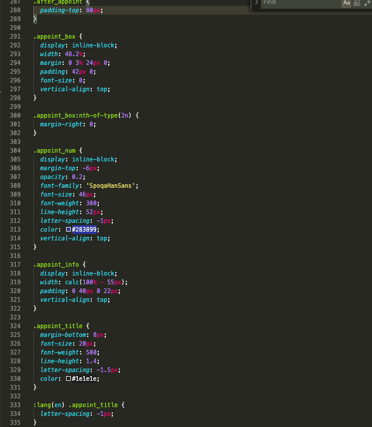
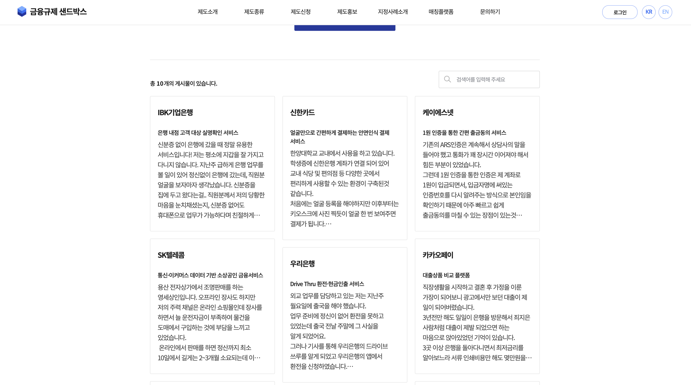
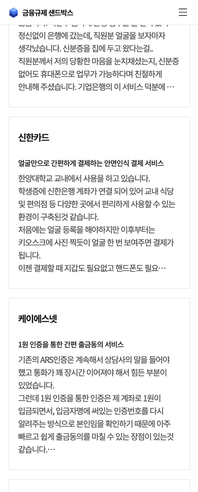
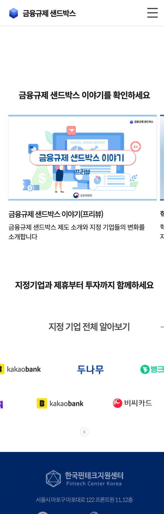
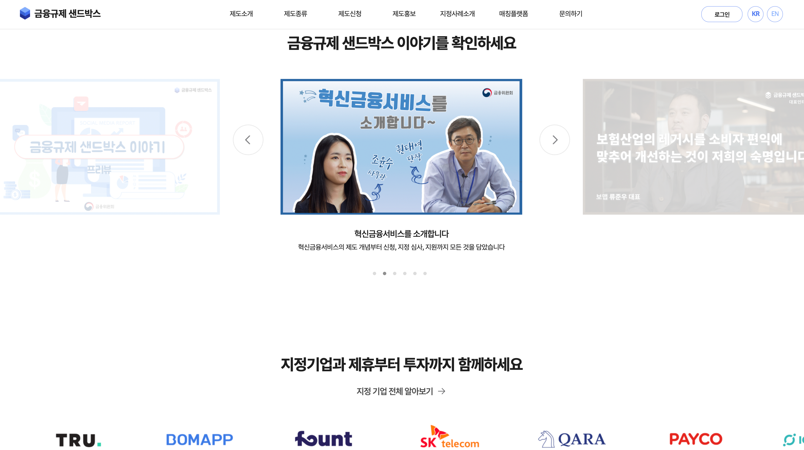

금융규제 샌드박스 링크


프로젝트 진행 내용
- - PC/mobile/script 기여도 100%
- - PM으로 참여
- - 페이지 컴포넌트, 모듈, ui기능 작업
- - 국/영문 진행. 대략 국문 38페이지, 영문 25페이지
- - 벡앤드와 협업

유지 보수나 재활용이 수월한 네이밍을 지향합니다.
여러 네이밍 기법들을 참고하여 저만의 규칙을 만들어 나가고 있습니다.
심한 약어보다는 작업자가 파악하기 수월한, 적절하게 생략된 네이밍을 선호합니다.




다양한 레이아웃작업을 진행